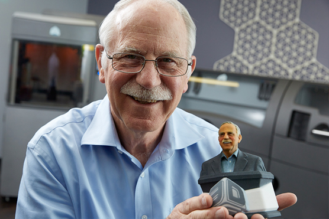

Technology
3D Printer
2016

1984 – Kelahiran 3D Printing
Charles Hull ( salah satu pendiri 3D Systems) menciptakan teori stereolithography yaitu proses pencetakan yang memungkinkan nyata objek 3D yang akan dibuat dari data digital. Teknologi ini digunakan untuk membuat model 3D dari gambar dan memungkinkan pengguna untuk menguji desain sebelum masuk ke dalam program manufaktur.
1992 – Bangunan Parts, Lapis Demi Lapis
Pertama kalinya mesin SLA (Stereolithographic Apparatus) diproduksi oleh 3D Systems. Proses mesin menggunakan laser UV dalam pemadatan photopolymer, cairan dengan viskositas dan warna yang membuat bagian tiga dimensi lapis demi lapis. Meskipun tidak sempurna, Mesin ini membuktikan bahwa bagian-bagian yang sangat kompleks dapat diproduksi dalam semalam.
1999 – Pengaplikasian 3D printing di dunia medis dengan penciptaan kandung kemih buatan dari teknologi printer 3D
Pertama kalinya Organ buatan ditanamkan pada manusia ketika pasien menjalani augmentasi kandung kemih menggunakan 3D perancah sintetis dilapisi dengan sel mereka sendiri. Teknologi ini dikembangkan oleh para ilmuwan di Wake Forest Institute untuk Pengobatan Regeneratif , membuka jalan untuk berkembangnya strategi lain untuk organ rekayasa termasuk mencetaknya. Karena dibuat dengan sel pasien sendiri ada sedikit atau tidak adanya resiko penolakan.
2000 – Miniatur ginjal manusia diciptakan dengan teknologi 3D printing
Para ilmuan medis membuat miniatur ginjal fungsional yang mampu mengencerkan urine pada hewan. Pengembangan dan riset dilakukan oleh Wake Forest Institute untuk Regeneratif Medis yang bertujuan untuk cetak organ dan jaringan menggunakan teknologi cetak 3D
2005 Open-Source Kerja Sama Dengan 3D printing
Dr. Adrian Bowyer di University of Bath mendirikan RepRap, sebuah inisiatif open source untuk membangun printer 3D yang dapat mencetak sebagian besar komponennya sendiri. Visi dari proyek ini adalah untuk mendemokratisasikan manufaktur dengan harga murah dan mendistribusikan unit RepRap untuk individu di mana saja, serta memungkinkan mereka untuk menciptakan produk sehari-hari mereka sendiri
2006 – Penemuan mesin Selective Laser Sintering /h3>
Pertama kalinya mesin SLS (Selective Laser Sintering) menjadi layak dipakai dan muncul untuk publik. Mesin jenis ini menggunakan laser untuk memadukan bahan menjadi produk 3D. Ini adalah terobosan baru untuk kustomisasi massal dan on-demand pembuatan bagian industri serta prostesis. Pada tahun yang sama Objet (penyedia sistem 3D Printing dan bahan) menciptakan mesin yang mampu mencetak dalam beberapa bahan termasuk elastomer dan polimer. Mesin ini memungkinkan membuat single parts dengan berbagai variasi kepadatan dan sifat material.
2008 – Pertama kalinya replikasi printer 3D muncul
Berikut diluncurkan pada tahun 2005 tentang Proyek RepRap yang dirilis oleh Darwin. Pertama kalinya replikasi printer 3D muncul yang mampu mencetak mayoritas komponen sendiri dan memungkinkan pengguna yang sudah memiliki satu untuk membuat printer lagi untuk teman-temannya.
2008 – Terobosan baru untuk prostesis
Pertama kalinya orang berjalan dengan kaki palsu yang dicetak oleh printer 3D baik bagian lutut, kaki, soket, dll. Kaki palsu tersebut dicetak dalam struktur yang kompleks yang sama dengan aslinya tanpa perakitan apapun. Pengembangan dan panduan penciptaan Inovasi dipesan terlebih dahulu dan disesuaikan dengan kakinya.
2009 – KIT DIY untuk printer 3D mulai dipasarkan
Makerbot Industries, sebuah perusahaan hardware open-source untuk printer 3D, mulai menjual kit DIY yang memungkinkan pembeli untuk membuat printer 3D mereka sendiri dan produk.
2010 – Pesawat tanpa awak pertama yang dibuat dengan teknologi 3D Printing
Para ilmuan dari University of Southampton bidang desain dan penerbangan membangun pesawat pertama dengan printer 3D. Pesawat tanpa awak ini dibangun dalam tujuh hari dengan anggaran sebesar £ 5.000.
2011- Mobil pertama yang dibuat dengan teknologi 3D printing
Kor Ecologic memperkenalkan Urbee yang ramping dan ramah lingkungan, prototipe mobil ini dicetak menggunakan printer 3D dengan body lengkap pada konferensi TEDxWinnipeg di Kanada.
2011 – 3D Printing menggunakan bahan emas dan perak
Layanan cetak 3D yang pertama dalam dunia 3D printing yang menawarkan emas dan perak sebagai bahan pencetakan. Hal ini berpotensi membuka opsi manufaktur baru dan lebih murah untuk desainer perhiasan.
2012 – Rahang Palsu yang dicetak mengunakan teknologi printer 3D
Dokter dan insinyur di Belanda menggunakan printer 3D buatan LayerWise untuk mencetak prostetik rahang bawah, yang kemudian ditanamkan ke seorang wanita berusia 83 tahun menderita infeksi tulang kronis. Teknologi ini saat ini sedang dieksplorasi untuk mempromosikan pertumbuhan jaringan tulang baru.
Pengertian 3D Printing
3D Printing atau dikenal juga sebagai Additive Layer Manufacturing adalah proses membuat objek padat 3 dimensi atau bentuk apapun dari model digital. Cara kerjanya hampir sama dengan printer laser dengan tehnik membuat objek dari sejumlah layer/ lapisan yang masing-masing dicetak di atas setiap lapisan lainnya.